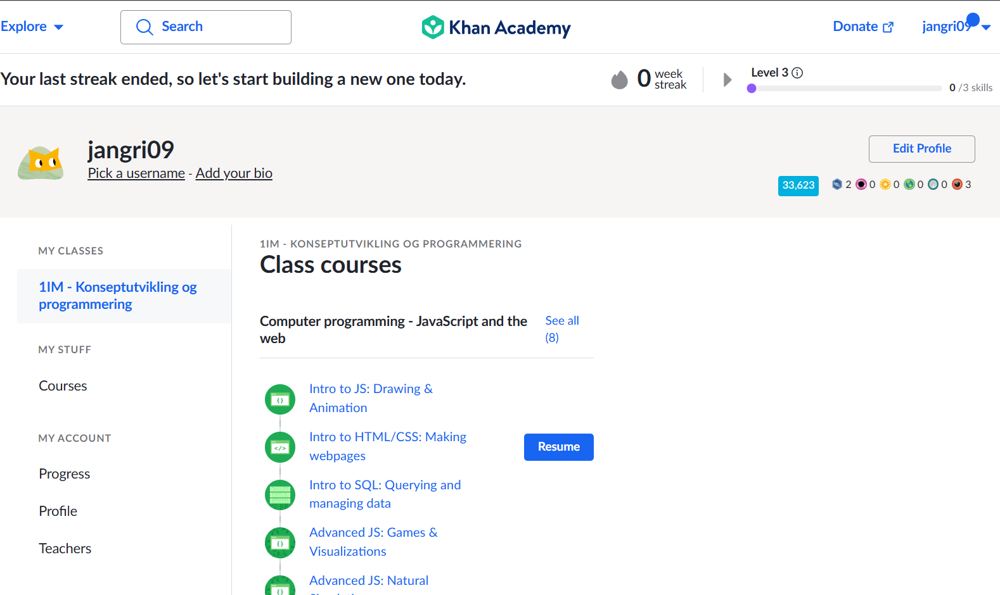

Jeg lagde et minimalistisk, interaktivt selvportrett for å speile min personlighet og fange målgruppens interesse.

Gjennom RAW-filer lærte jeg å skape både dramatiske og estetiske bilder ved å mestre lys og fargekorrigering i Photoshop.

Jeg lagde en serie med øvingsoppgaver i Photoshop for å forbedre mine ferdigheter i bildebehandling.
Jeg lagde en GitHub-profil for å vise frem mine prosjekter og kodeferdigheter.

Prosjektet lærte meg å bygge en nettsides struktur (HTML) og design (CSS), og viktigheten av nøyaktig layout.